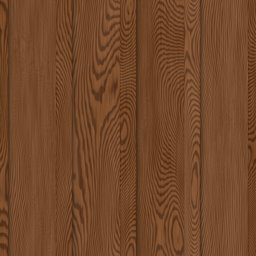

← All scout pages · Public copy, pages as of 2026-10-16 11:18. Poly Haven’s previews are not copied (their site pictures are not CC0); the offline 3D viewer stays on the owner’s machine.
Wood scout — CC0 prospects
Every Wood row that the 16 Oct material grid uses or proposes (docs/plans/SURFACE_LIST-proposed-2026-10-16.md, commit d770ab5c), with up to three CC0 prospects from Poly Haven and ambientCG. The first card in each row is the best fit. Real photos are preferred; a generated (computer-made) set is listed only when neither library has a photo of that look, and it is marked. Built 2026-10-16 by the scout wood trigger, run read-only: nothing in the game or the records changed and nothing was downloaded at full size.
3D: an ambientCG prospect's picture opens ambientCG's own 3D preview; a Poly Haven prospect's page has its 3D preview. Our offline viewer of the game's own maps is not on this public copy.
11rows scouted (of 21 looks in Wood)
8with a real photo of the look
3with nothing real (weak fits, generated or none)
30prospects
Left out — marked [UNUSED?] in the list (no grid cell uses them): OSB / chipboard, Parquet, Wood shingle siding, Pallet wood, Bamboo.
Left out — already in your review records: Planed plank, light (under review), Planed plank, medium stain (under review), Planed plank, dark stain (under review).
Now in the game code-drawn · list: used by the grid drawn by code: dino_game_rnd/surface_gen/gen_wood_rough_sawn_lumber.py Thumbnail: the game's drawn picture
PHOTO
Photos of plain unfinished boards with saw texture and knots. raw_wooden_floor_01 is new on Poly Haven (13 Oct): raw weathered planks with nail holes. The 10 Oct pick hinoki_planks was dropped: it is planed and satin-smooth.
Now in the game code-drawn · list: used by the grid drawn by code: dino_game_rnd/surface_gen/gen_wood_painted_plank.py Thumbnail: the game's drawn picture
PHOTO
White painted plank photos; the last two have worn, chipped paint like our drawing's flecks.
CC0 License — CC0 1.0 Universal - public domain dedication, no attribution required
Real size
1.8 m × 1.8 m (page: “1.8m wide”)
2K size
65 MB as PNG (Diffuse + nor_gl + Rough + AO + arm, what a pull fetches) · 8.9 MB as JPG
Credit
Rob Tuytel; Unlocked by the Community 🎉 This asset was locked in the Wood Works Vault until our patrons reached its funding goal and freed it for everyone. Unlocked August 11, 2026 Help Unlock the Next Vault
Now in the game code-drawn · list: used by the grid drawn by code: dino_game_rnd/surface_gen/gen_wood_plywood_sheet.py Thumbnail: the game's drawn picture
PHOTO
plywood is a plain sheet face; kitchen_wood a pale veneer board.
Not copied here: Poly Haven’s previews are not CC0. Its Poly Haven page shows it ↗
Now in the game code-drawn · list: used by the grid drawn by code: dino_game_rnd/surface_gen/gen_wood_mdf_particle_board.py Thumbnail: the game's drawn picture
WEAK FIT — NOTHING REAL
No MDF or particle-board photo in either library. Nearest photo: a sanded plywood face (weak). Chipboard002 is a computer-made fine chipboard, the nearest particle board, listed because no photo exists. (OSB has its own row, unused.)
Route: Material Maker is the likely route: MDF is a near-uniform tan with fine fibre noise and no grain, an easy procedural build.
Not copied here: Poly Haven’s previews are not CC0. Its Poly Haven page shows it ↗
Now in the game code-drawn · list: used by the grid drawn by code: dino_game_rnd/surface_gen/gen_wood_hardwood_strip_flooring.py Thumbnail: the game's drawn picture
PHOTO
Photos of narrow-strip hardwood floors, light to mid brown.
CC0 License — CC0 1.0 Universal - public domain dedication, no attribution required
Real size
1.99 m × 1.99 m (page: “2m wide”)
2K size
77 MB as PNG (Diffuse + nor_gl + Rough + AO + arm, what a pull fetches) · 11 MB as JPG
Credit
Charlotte Baglioni Scanning; Rico Cilliers Processing; Unlocked by the Community 🎉 This asset was locked in the Wood Works Vault until our patrons reached its funding goal and freed it for everyone. Unlocked August 11, 2026 Help Unlock the Next Vault
Now in the game code-drawn · list: used by the grid drawn by code: dino_game_rnd/surface_gen/gen_wood_clapboard_lap_siding.py Thumbnail: the game's drawn picture
PHOTO
WoodSiding009 is white painted lap siding, almost our drawing; the other two are bare-wood overlapping boards.
The picture opens our 3D viewer — downloaded, not in the game yet (on the owner’s machine only)
07
Board-and-batten siding
wood_board_and_batten_siding

Now in the game code-drawn · list: used by the grid drawn by code: dino_game_rnd/surface_gen/gen_wood_board_and_batten_siding.py Thumbnail: the game's drawn picture
WEAK FIT — NOTHING REAL
No true board-and-batten wall. wooden_gate has battens across upright boards; the other two are upright boards with dark gaps.
Route: Material Maker is the likely route: upright boards with a raised batten every 30–40 cm, laid over a real plank photo's grain (wood_plank_wall or roof_planks).
CC0 License — CC0 1.0 Universal - public domain dedication, no attribution required
Real size
1.5 m × 1.5 m (page: “1.5m wide”)
2K size
61 MB as PNG (Diffuse + nor_gl + Rough + AO + arm, what a pull fetches) · 8.4 MB as JPG
Credit
Rob Tuytel; Unlocked by the Community 🎉 This asset was locked in the Wood Works Vault until our patrons reached its funding goal and freed it for everyone. Unlocked August 11, 2026 Help Unlock the Next Vault
Now in the game code-drawn · list: used by the grid drawn by code: dino_game_rnd/surface_gen/gen_wood_tongue_and_groove_panelling.py Thumbnail: the game's drawn picture
PHOTO
Narrow upright boards with tight joints, like interior panelling.
CC0 License — CC0 1.0 Universal - public domain dedication, no attribution required
Real size
1.13 m × 1.13 m (page: “1.1m wide”)
2K size
81 MB as PNG (Diffuse + nor_gl + Rough + AO + arm, what a pull fetches) · 15 MB as JPG
Credit
Charlotte Baglioni Scanning; Rico Cilliers Processing; Unlocked by the Community 🎉 This asset was locked in the Wood Works Vault until our patrons reached its funding goal and freed it for everyone. Unlocked August 11, 2026 Help Unlock the Next Vault
Now in the game code-drawn · list: used by the grid drawn by code: dino_game_rnd/surface_gen/gen_wood_stacked_round_log.py Thumbnail: the game's drawn picture
PHOTO
wood_trunk_wall is a wall of round logs; wooden_rough_planks has rounded, mossy logs; Logs001 is a firewood pile seen end-on.
Now in the game code-drawn · list: used by the grid drawn by code: dino_game_rnd/surface_gen/gen_wood_hewn_timber_beam.py Thumbnail: the game's drawn picture
WEAK FIT — NOTHING REAL
No adze-hewn beam in either library. rough_wood is coarse old timber; beam_wall_01 a wall of rounded beams — weak fits.
Route: Material Maker is the likely route: adze facets and checking cracks over a real rough-timber photo (rough_wood) for the grain.
Not copied here: Poly Haven’s previews are not CC0. Its Poly Haven page shows it ↗
Now in the game code-drawn · list: used by the grid drawn by code: dino_game_rnd/surface_gen/gen_wood_barn_wood_weathered_grey_plank.py Thumbnail: the game's drawn picture
PHOTO
Photos of sun-greyed old planks; wood_planks_grey is the closest silver-grey.